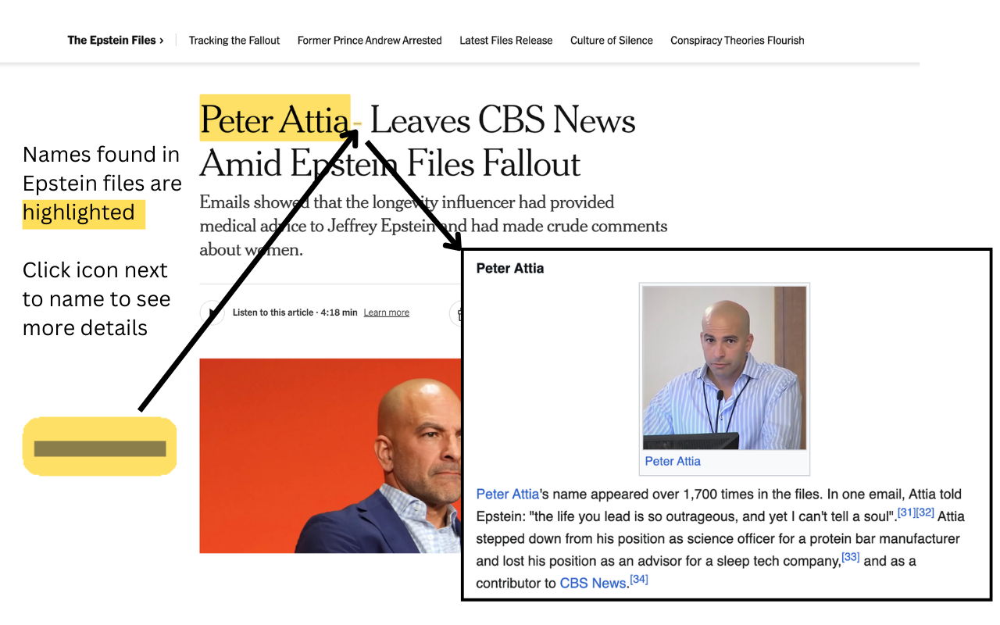
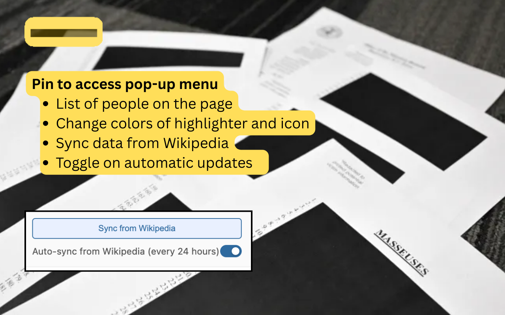
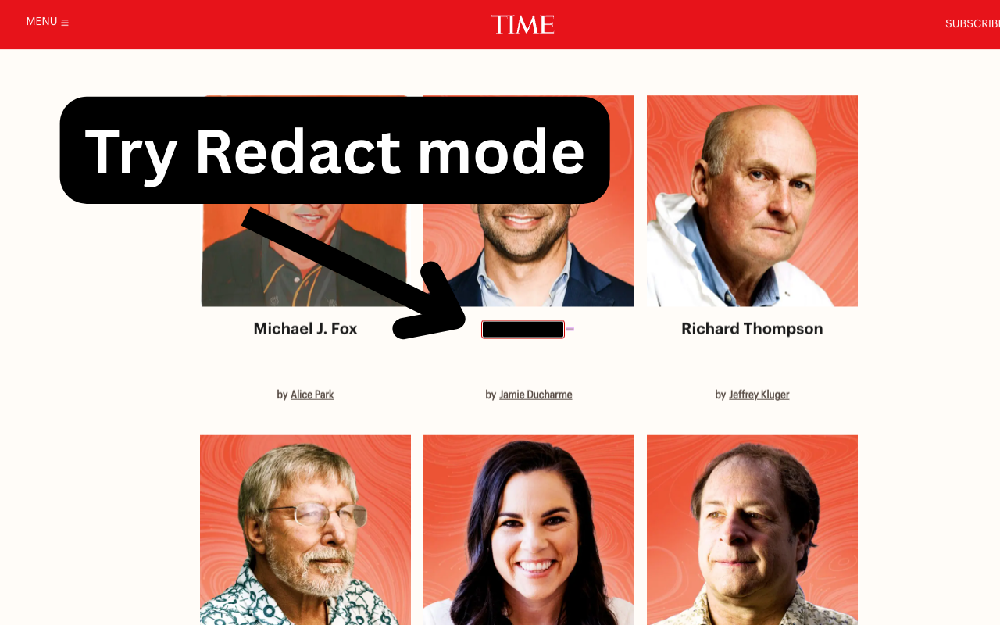

How it works
When you visit any webpage, the extension scans the text for names listed in the Wikipedia article List of people named in the Epstein files. When a name is found:
- A small highlighter icon appears next to the name
- Optionally, the name is highlighted in your choice of color
- The toolbar badge shows how many listed names appear on the page
- Click the icon to open that person’s section on the Wikipedia list
- With “Wikipedia preview on hover” enabled, hover the icon to see a short excerpt from Wikipedia

Features
- Toolbar badge — count of unique names on the current page
- Popup — see which names appear on the page and how many times
- Wikipedia preview — optional hover tooltip with a snippet from the list article
- Toggle icon & highlight — show or hide the icon and colored background
- Color picker — choose highlight and icon color
- Redact mode — hide names under a black bar; hover to reveal
- Master switch — disable the extension with one click
- Works everywhere — any website, including SPAs and infinite scroll


Privacy
Epstein Files Highlighter does not collect, store, or transmit any personal data. Page text is processed locally in your browser. The only optional request is to Wikipedia to fetch or refresh the name list when you choose to sync.
Disclaimer
Appearing in the Epstein files does not mean a person has done anything wrong. The files include names of victims, witnesses, associates, and people mentioned only incidentally. This extension makes no judgment about any individual — it simply shows who appears on the list and lets you follow through to Wikipedia to read the context.
Matching is by name only. Someone who shares a name with a listed person may occasionally be tagged in error. Always click through to verify.